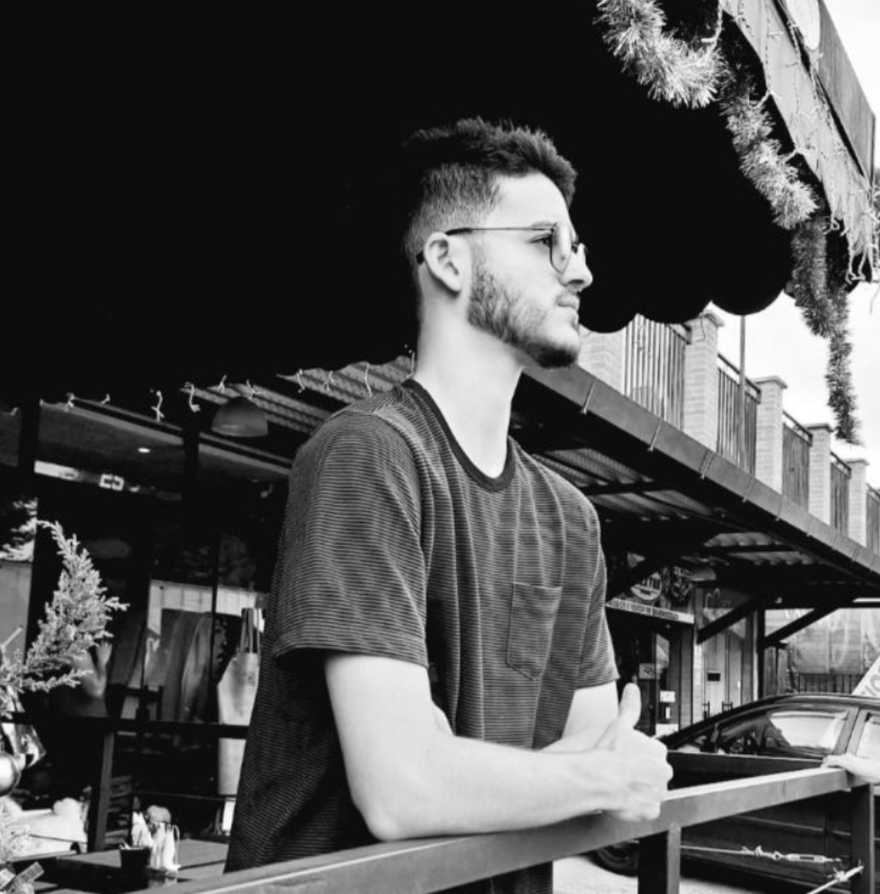
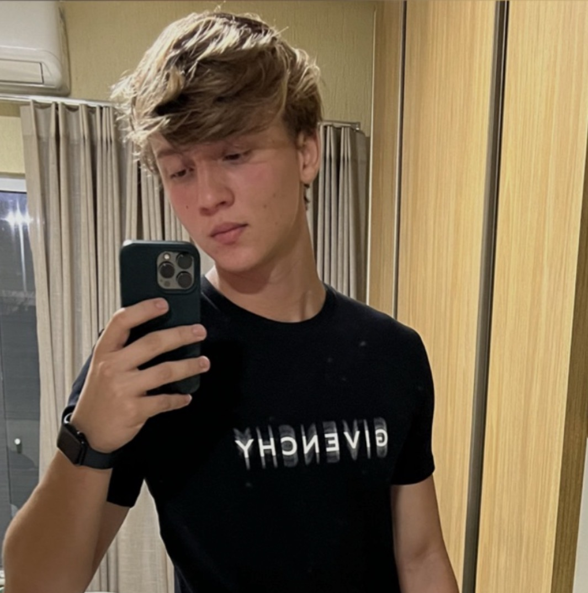
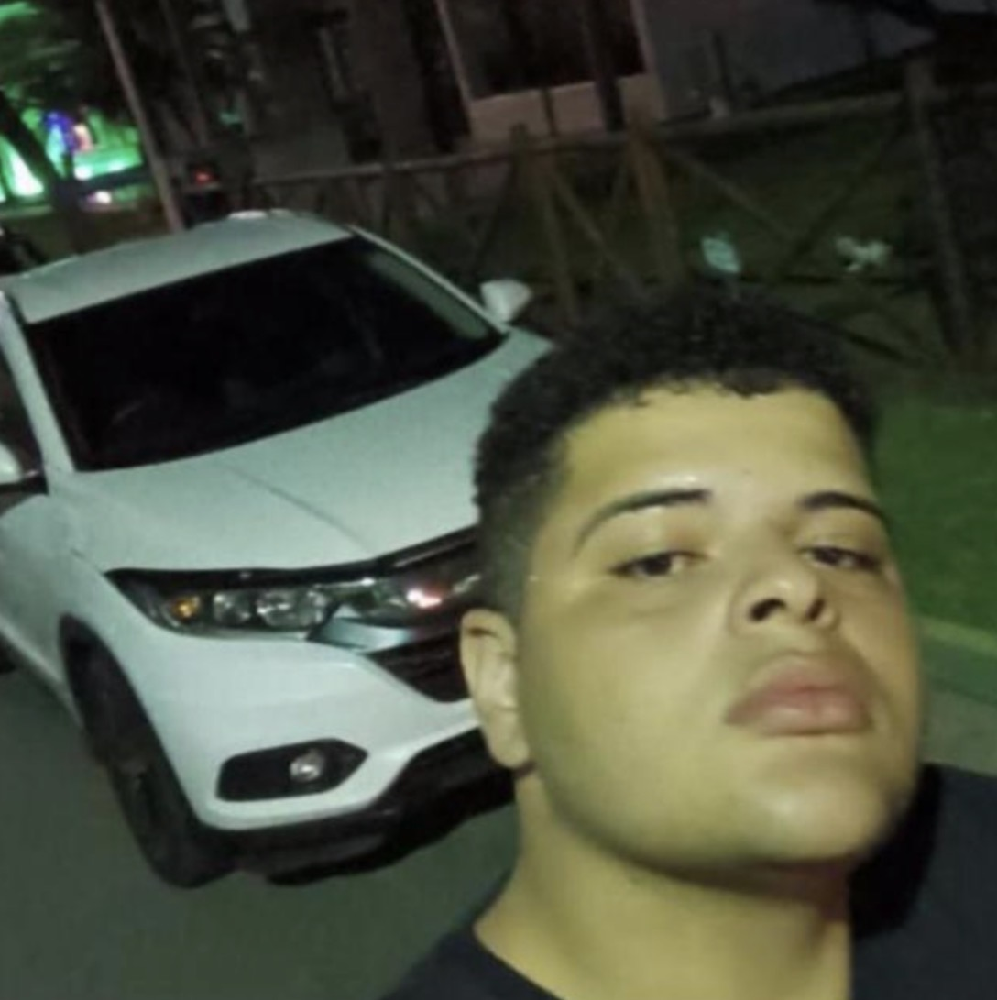

<html>
  <html>
    <head>
      <title>Tecnograma: Inovções diárias</title>
      <link
        rel="stylesheet"
        href="https://fonts.googleapis.com/css?family=Roboto&display=swap"
      />
      <link rel="stylesheet" href="./style.css" />
    </head>
    <!-- ...restante do código... -->
  </html>
  <link rel="stylesheet" href="./style.css" />
  <body>
    <header>
      
      <br />
      <center>
        <div><a href="./index.html">Página Inicial</a></div>
        <div><a href="./maisnot.html">Ver mais</a></div>
        <div><a href="./sobre.html">Sobre Nós</a></div>
        
      </center>
    </header>
    <div>
      
      <h1>Marcelo Ferreira- 💻 Diretor de Tecnologia e Inovação</h1>
      <p>
        Marcelo é o responsável por toda a parte tecnológica do jornal: desde o
        site, aplicativos, sistema de distribuição digital até soluções de
        inteligência artificial que ajudam na curadoria de notícias. É ele quem
        garante que o Tecnograma não seja apenas um jornal, mas também uma
        plataforma moderna e acessível.
      </p>
    </div> <br> <br> <br>
    <div>
      
      <h1>Fernando Pirichowski- 📰. Editor-Chefe</h1>
      <p>
        é o cérebro editorial do jornal. Ele define a linha de comunicação,
        escolhe quais pautas têm mais relevância para os leitores e garante que
        o conteúdo siga um padrão de qualidade e credibilidade. Com olhar
        crítico e muita organização, é quem mantém o jornal sempre atualizado e
        em sintonia com o que realmente importa.
      </p>
    </div> <br>  <br> <br>
    <div>
      
      <h1>Gileno Neto- 🎨 Editor de Mídias Visuais e Criativas</h1>
      <p>
    Gileno cuida da parte visual e multimídia: design gráfico, vídeos, ilustrações e identidade visual. É quem transforma uma notícia em algo atrativo e envolvente para o público, dando cara ao jornal. Com experiência em edição de vídeo e VFX, consegue criar capas impactantes, gráficos interativos e até animações para redes sociais.
      </p>
    </div>
   <br> <br>
    
    <footer>
      <p>© 2024 Tecnograma. Todos os direitos reservados.</p>
      <br />
      <p>Contato: 79 99999-9999 | Email: Unit@email.com</p>
      <br /><br />
      <form action="#" method="post">
        <label for="newsletter-email">Assine nossa newsletter:</label><br />
        <input
          type="email"
          id="newsletter-email"
          name="email"
          placeholder="Seu e-mail"
          required
        />
        <button type="submit">Assinar</button>
      </form>
    </footer>
  </body>
</html>
